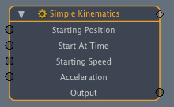

Channel Mod Simple Kinematics¶
Channel_Mod_Simple_Kinematics is a basic example plugin. This wiki page is intended as a walkthrough of the code in order to help you better understand the SDK.
When installed this plugin adds the Simple Kinematics channel modifier, allowing you to take in channels as starting position, time, speed, and acceleration and output them.
The simple kinematics channel modifier display.
Code Walkthrough¶
Class Declarations¶
The classes are structured in a nested format. We first declare a class to interact with the log. Following that we declare an object of that type in a class that creates an instance of our linear channel modifier. We then create a package class in which we attach the instance class.
The first class declaration inherits from FAQ#Q:_How_do_I_write_to_the_log.3F, which is the same as inheriting from ClxLogMessage but with an added Luxology copyright. Inside the class we have a CSimpleKinematicsLog which defines what we will actually be writing out to the log. An object of this type is defined in our CSimpleKinematicsInstance class so it writes out to the log when the server dependent on it is used.
1 2 3 4 5 6 7 | class CSimpleKinematicsLog : public CLxLuxologyLogMessage
{
public:
CSimpleKinematicsLog () : CLxLuxologyLogMessage ("cmSimpleKinematics") { }
const char * GetFormat () { return "Linear Blend Object"; }
};
|
To create an instance of the Simple Kinematics object we need to implement the Simple Kinematics Package object so we inherit from CLxPackageInstance. We also need to modify channels as part of our instance, so we inherit from CLxImpl_ChannelModItem.
Inside our class, we declare an object of the CSimpleKinematicsLog type, which is the class we just wrote above. Following that we have three functions with the pins prefix, which indicates that they are redeclarations of virtual functions declared in the CLxImplPackageInstance class. The initialize class adds the m_item object to our instance. Next, our Synthname function gives a name to the the instance. The Cleanup function shuts down our instance by releasing the m_item object from our instance.
The next four functions have cmod prefixes, indicating that they are redeclarations of virtual functions declared in the CLxImplChannelModItem class. Our Flags function looks at the state of the channel that the instance is currently dealing with and throws a flag indicating as to whether or not it is connected to input a, b, or the output. Our Allocate function then looks up and adds all the channels. The evaluate function then takes the values present in each of the input channels and performs the operation we want on them. In this case, it is to perform simple kinematics operations on them.
1 2 3 4 5 6 7 8 9 10 11 12 13 14 15 16 17 18 19 20 21 22 23 24 25 | class CSimpleKinematicsInstance
:
public CLxImpl_PackageInstance,
public CLxImpl_ChannelModItem
{
CSimpleKinematicsLog log;
public:
CSimpleKinematicsPackage *src_pkg;
CLxUser_Item m_item;
ILxUnknownID inst_ifc;
LxResult pins_Initialize (ILxUnknownID item, ILxUnknownID super);
void pins_Cleanup (void);
LxResult pins_SynthName (char *buf, unsigned len);
unsigned int cmod_Flags (ILxUnknownID item, unsigned int index);
LxResult cmod_Allocate (
ILxUnknownID cmod,
ILxUnknownID eval,
ILxUnknownID item,
void **ppvData);
void cmod_Cleanup (void *data);
LxResult cmod_Evaluate (ILxUnknownID cmod, ILxUnknownID attr, void *data);
};
|
To set up our object we need a package, so we have this class inherit from CLxImpl_Package.
We start off by declaring a factory which is a utility that allows server attributes to be read and new server instances to be spawned.
Following this, we have three functions with the pkg prefix, indicating that they are redeclarations of functions in the CLxImplPackage class. The first sets up some channels for our package, and the second sets up a test interface. The most important of the three, though, is our attach function. What this function does is create an object of the CSimpleKinematicsInstance type using the factory that we declared and attach it to our package.
1 2 3 4 5 6 7 8 9 10 11 12 | class CSimpleKinematicsPackage : public CLxImpl_Package
{
public:
static LXtTagInfoDesc descInfo[];
CLxPolymorph<CSimpleKinematicsInstance> chanmod_factory;
CSimpleKinematicsPackage ();
LxResult pkg_SetupChannels (ILxUnknownID addChan);
LxResult pkg_TestInterface (const LXtGUID *guid);
LxResult pkg_Attach (void **ppvObj);
};
|
:doc:`./Server_Tags `¶
Servers tags are examined when the server is initialized, and give information about the server. We set the tags in this case by taking descinfo[] arrays and associating the relevant data with the corresponding flags.
The tags here indicate that the CSimpleKinematicsPackage class is dependent on the chanmodify SuperType with the internal name of cmSimpleKinematics.
1 2 3 4 5 | LXtTagInfoDesc CSimpleKinematicsPackage::descInfo[] = {
{ LXsPKG_SUPERTYPE, "chanModify" },
{ LXsSRV_LOGSUBSYSTEM, "cmSimpleKinematics" },
{ 0 }
};
|
./Initialize_(index)¶
Intialize is called when we add the plugin to modo, and is the utility that exports the server.
Our initialize function indicates that we will be exporting one server dependent on the CSimpleKinematicsPackage class that uses the Package and StaticDesc interfaces as well as being names cmSimpleKinematics.
1 2 3 4 5 6 7 8 9 | initialize ()
{
CLxGenericPolymorph *srv;
srv = new CLxPolymorph<CSimpleKinematicsPackage>;
srv->AddInterface (new CLxIfc_Package <CSimpleKinematicsPackage>);
srv->AddInterface (new CLxIfc_StaticDesc <CSimpleKinematicsPackage>);
thisModule.AddServer ("cmSimpleKinematics", srv);
}
|
Implementations¶
This function evaluates the modifiers we have used on the given channels.
1 2 3 4 5 6 7 8 | LxResult
CSimpleKinematicsInstance::cmod_Evaluate (
ILxUnknownID cmod, // ILxChannelModifierID
ILxUnknownID attr, // ILxAttributesID
void *data)
{
...
}
|
We create Factory_Object here to export CMathMultiInstance.
1 2 3 4 | CSimpleKinematicsPackage::CSimpleKinematicsPackage ()
{
...
}
|